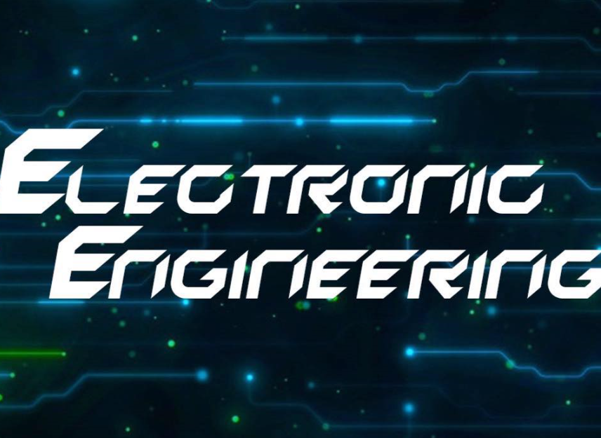

산공을 위한 복수전공
● HOME
● 산업경영공학과
● 컴퓨터공학과
● 소프트웨어학과
● 전자공학과
● 금융수학과
● 마이페이지
전자공학과
● 교과과정
● 교수진 소개
● 진로

세계가 추구하고 있는 정보화 사회의 발전에 부응 할 수 있는 창의성 있는 전문 기술인을 양성하기 위해 전자 공학의 기초학문과 응용원리 및 실습을 중점적으로 교육한다. 또 산학 협동체제를 구축하여 학교에서 터득한 이론을 현장에서 적용할 수 있는 폭넓은 산지식을 갖추게 함으로써, 국가발전에 기여할 수 있는 전문인을 양성하고 있다. 공학인증제를 통한 수요지향적 교육을 시행하고 있다.
Copyright ©유성완 원현아 이기언 우하진 . All rights reserved.